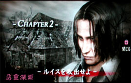
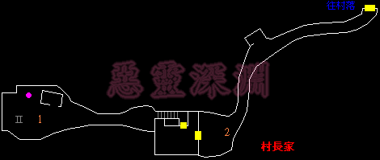
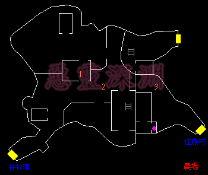
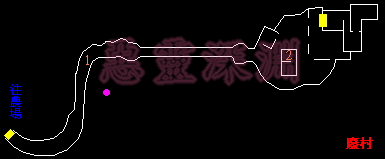
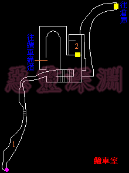
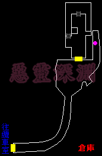
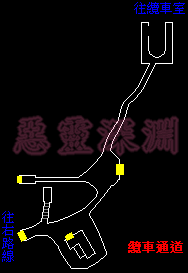
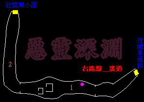

|
惡靈古堡∼惡靈古堡４----The Another Order─Chapter2
|
|
 救出Luis 地圖上的紫色圓點●表示高價寶物的位置，標綠色的道具則是過關必須的重要道具。
 Ada這次的位置在村長家二樓，可以先往編號1，這裡有一群烏鴉和高價寶物黄銅の懐中時計（黃銅的懷錶）， 當然如果若沒蓋上蓋 子，則是黄銅の懐中時計＿臭（黃銅的懷錶＿臭）。 在編號2有個電鋸男，打倒他可以拿到ルビー（紅寶石）。往村落。
再一次回到村落，這次道具都重新配置了，雖然有村民，但是不會無止盡的出現，可以好好調查。往地下通道的路又被封死，沒辦 法過去了。往農場。
 農場上有一批村民。在編號1的屋頂上有小寶石，在編號2附近可以使用勾繩槍上去。編號3則有大量的捕獸夾，要特別小心。這裡 的高價寶物是金の腕輪（金的手環）。往廢村。
 很幸運，Ada不用受大石頭的追逐，不過還是要小心會丟炸藥的村民。走到在編號1時回頭往上看，可以看到一條吊橋，使用勾繩槍 上去拿寶物くぼみのあるステイン（有凹槽的啤酒杯），這條吊橋就是Leon走過的往籠城小屋的吊橋，只不過現在吊橋兩邊都被堵 住無法過去。 到編號2看到Leon和Luis被帶走的動畫後，就可以進入屋子裡 拿取一些道具。現在目的地已經改變，必須往回走，在通過廢村的通道 時，會出現三批敵人。 回程中，村落的重新出現敵人，道具卻沒有重新配置。其中有個守在村落往村長家的村民，身上竟然穿著Leon的外套呢。 回到村長家，為了救Leon卻被抓住了。
 動畫最後，要按複合按鍵躲避村民的攻擊。此時開始，村民體內的疫生獸開始出現。Ada醒來後的位置在纜車室的編號1，底部有高 價寶物ステインの宝石＿緑（啤酒杯的寶石＿綠）。往編號2，那�堸ㄓF武器商人之外，最重要的是取得鐵製的鑰匙，這把鑰匙可 以打開通往倉庫的門。
 倉庫旁邊的小巷中有寶物ステインの宝石＿赤（啤酒杯的寶石＿紅）。一打開倉庫的門，電鋸女就會出動了，她的身上有著重要道 具纜車控制裝置鑰匙，所以必須打倒。拿到鑰匙就要回到纜車室，途中小心敵人。 在纜車室的控制面板使用纜車控制裝置鑰匙，啟動纜車，就可以搭乘纜車往纜車通道了。
 纜車通道相當的平靜，也只有一條路線可以選擇，在往右路線的門前使用勾繩槍，即可進入右路線＿�媢D。
 在編號1附近有兩個可以使用勾繩槍的地方，利用勾繩槍可以到上層去拿道具，其中包含一個高價寶物ステインの宝石＿黄（啤酒 杯的寶石＿黃）。前進到編號2時，巨人豋場了，玩家可以選擇不打，若是打贏了可得到10000ptas的獎勵。 到籠城小屋，見到Luis，本章結束。
疑難解答
黄銅の懐中時計＿臭（黃銅的懷錶＿臭） 1000ptas ルビー（紅寶石） 10000ptas 金の腕輪（金的手環） 8500ptas くぼみのあるステイン（有凹槽的啤酒杯） 3000ptas ステインの宝石＿緑（啤酒杯的寶石＿綠） 3000ptas ステインの宝石＿赤（啤酒杯的寶石＿紅） 3000ptas ステインの宝石＿黄（啤酒杯的寶石＿黃） 3000ptas 組合──ステイン＿赤＋緑＋黄（啤酒杯＿紅＋綠＋黃） 20000pta
的祭壇等等，多注意這種地方，就會發現更多的樂趣。 未經許可禁止轉載連結 |
惡靈深淵Biohazard Abyss http://98.to/coolbio